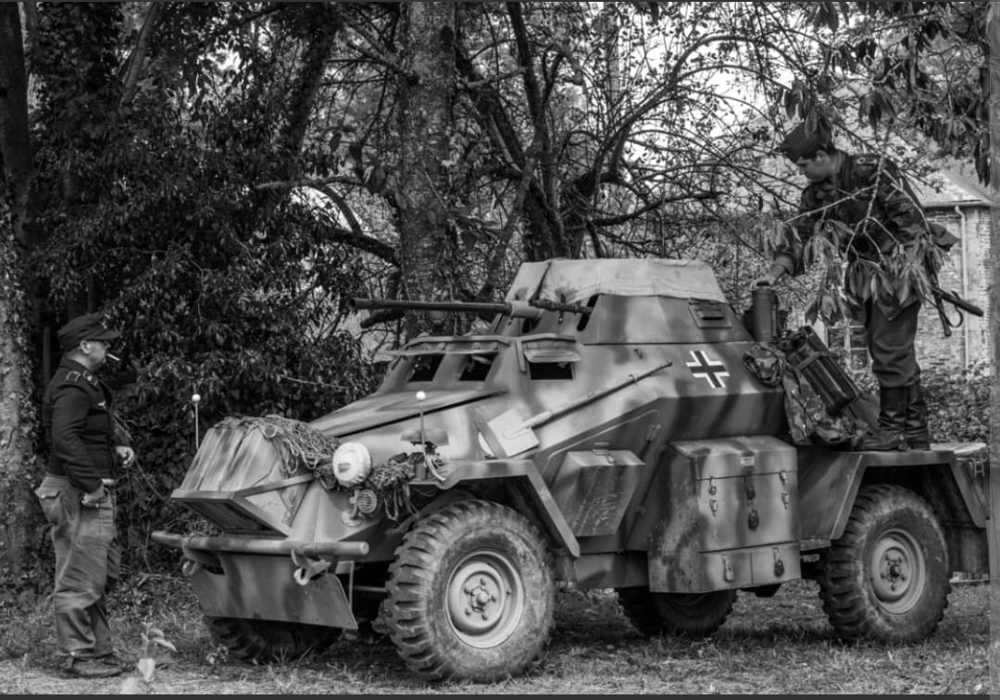
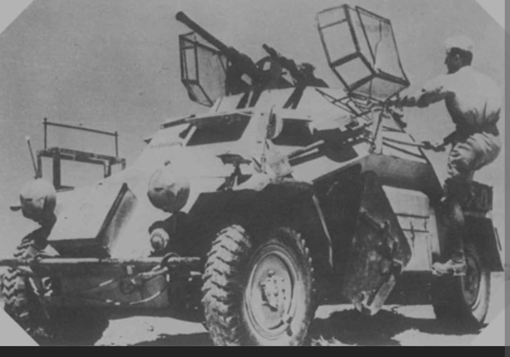
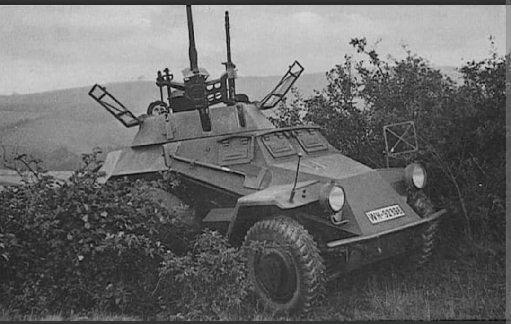

L'automitrailleuse blindée 4x4 rapide et agile, yeux et oreilles des divisions blindées de la Wehrmacht

Élément incontournable des bataillons de reconnaissance (Aufklärungs-Abteilungen) de la Wehrmacht, le Sd.Kfz. 222 (Sonderkraftfahrzeug 222), ou Leichter Panzerspähwagen (2 cm), était une automitrailleuse blindée légère à quatre roues motrices.
Conçue pour opérer en avant-garde des colonnes mécanisées, elle avait pour mission d'éclairer la voie, d'effectuer des reconnaissances en profondeur et d'engager rapidement les avant-postes légers ou l'infanterie ennemie grâce à sa grande vitesse et à son canon automatique.
Développée au milieu des années 1930 par les firmes **Eisenwerk Weserhütte** et **Horch** (Auto Union), l'automitrailleuse repose sur un châssis Horch 801/EG à transmission intégrale 4x4 et quatre roues directrices, lui offrant une maniabilité exceptionnelle sur route et terrain dégagé.
D'un poids d'environ 4,8 tonnes, elle est dotée d'une tourelle ouverte à dix faces surmontée d'un grillage anti-grenades rétractable. Son armement principal se compose d'un canon automatique de **2 cm KwK 30 ou KwK 38** couplé à une mitrailleuse MG 34 de 7,92 mm, capable d'un tir en élévation important utilisable contre les cibles aériennes à basse altitude.

Le Sd.Kfz. 222 s'illustre avec succès lors de la **Blitzkrieg** en Pologne (1939) et en France (1940), tirant parti du réseau routier développé en Europe occidentale. Il rencontre également un grand succès au sein de l'**Afrikakorps** d'Erwin Rommel en Afrique du Nord, où son agilité fait merveille dans les vastes espaces désertiques.
Cependant, lors de l'invasion de l'URSS (**Opération Barbarossa**), ses capacités tout-terrain s'avèrent rapidement limitées face à la boue de la Raspoutitsa et à la neige profonde du front de l'Est. Il y sera progressivement complété ou remplacé par des véhicules semi-chenillés comme le Sd.Kfz. 250/9.

Produit à près de **1 000 exemplaires** entre 1937 et 1944, le Sd.Kfz. 222 demeure l'un des véhicules de reconnaissance à roues les plus emblématiques du second conflit mondial.
Son design compact, combinant rapidité, motricité 4x4 et puissance de feu d'appui léger, a posé les bases architecturales des véhicules blindés légers de reconnaissance et de patrouille moderne utilisés par la majorité des armées d'après-guerre.
Page du Musée HOP WW2 – Section Véhicules Terrestres Allemands